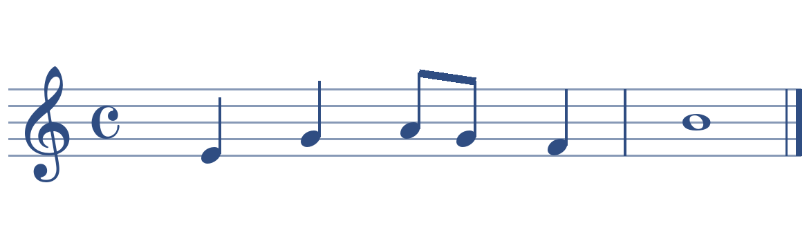

Finale to MusicXML
Convert a single score, a batch of files, or an entire music library.

Source files
.mus / .musxDrop your Finale scores here
Or choose files or a folder from your device.
Export settings
Conversion queue
0Add scores to start a conversion.
Conversion guide
What carries over to MusicXML?
Scorebridge uses Denigma to read Finale notation, including pitches, rhythms, voices, lyrics, tempo changes, and layout where the reader supports them. Linked parts can carry part-specific settings. Complex engraving, playback, fonts, and older percussion mappings can differ in the receiving notation app. Compare important scores with an original print or PDF and retain the Finale files.
What does cleanup change?
Cleanup removes empty, unmarked notation groups. Identical articulation marks on one note are listed in the report. You can opt to remove exact repeats of simple marks such as accents or staccatos. Hidden notes, cues, rests, voices, and expressive text retain their musical purpose and are left in place. If cleanup changes a score, its uncleaned MusicXML is also available for comparison.
How do folders and older files work?
Use Choose folder to include nested folders. The ZIP keeps the folder structure and disambiguates matching output names. Extensionless legacy Finale files are recognized by their header. Unreadable files are identified individually while the rest of the batch continues.
Older MUS scores can use reference tables for percussion, playback, and text. Your browser requests these tables from the Denigma maintainer and verifies their checksums. If unavailable, the conversion uses reader defaults and records that choice in the report.